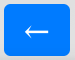
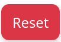
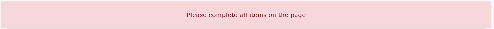

Welcome!
This is an online interactive course. There are multiple ways you can interact with it.
You must scroll to the bottom of the page to continue.
Navigation
Use the arrows (← and →) on the top center of the screen to go back and forth in this course
Use the Reset button if you want to start over or get stuck

Banners will appear to let you know that you are ready to move to the next page or remind you to complete the page.

Articles
If your online course has articles, the text will display in the center window. Most articles have rules like 'how long' you have been on the page, and 'did you reach the bottom'? Once these rules are met, you may continue. The course will tell you this with a banner at the top.Quizzes
If your online course has quizzes, questions will be rendered to the screen when you first open the page. You must press submit at the bottom to send your answers for review. Most quizzes have rules like 'minimum score' and 'attempts'. Once you click submit, your score will be displayed on the screen and its value will be saved. Refreshing the page before clicking submit may DELETE the answers you put thus far.Videos
If your online course has videos, a special video player (not like the ones you see on this page) will appear on your screen. Videos might have rules like 'how long' you need to be on the page and 'watch completion percentage' to see how much of the video you watched. The controls are similar to other video players, but it does not have a click and drag seek. Certain keyboard shortcuts work on the page like SPACE to play / pause, M to mute, and arrow keys to seek.Good luck and enjoy your course!